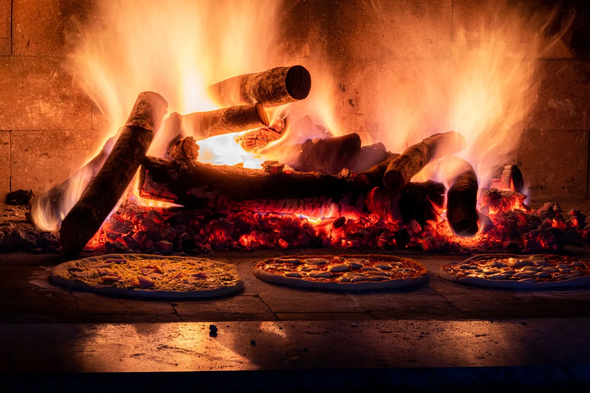

Pizza al trancio, pronta quando entri.
Impasto leggero, lavorato ogni giorno nel laboratorio di Via Verdi: tagli caldi da portare a casa o da mangiare sul posto.
Vent'anni di forno, un impasto più leggero
Il titolare porta in laboratorio vent'anni di esperienza da pizzaiolo: da lì nasce un impasto pensato per essere leggero e facile da digerire, lavorato ogni giorno in piccole quantità.
Le teglie di oggi
Quattro tagli che tornano sempre, preparati con pomodoro, mozzarella e ingredienti scelti al banco.
-
01
Margherita
Pomodoro, mozzarella e basilico: la base di ogni taglio.
-
02
Pizza con gamberi
Gamberi, pomodoro e mozzarella su un impasto croccante fuori e morbido dentro.
-
03
Pizza con burrata
Burrata fresca appoggiata sulla teglia appena uscita dal forno.
-
04
Pizza al taglio classica
Impasto leggero, tagliato al peso che preferisci, pronto da portare via.
Da portare via o da mangiare qui vicino
Il bancone è pensato per l'asporto e la consegna a domicilio, ma ci sono anche posti a sedere all'aperto per chi vuole un taglio caldo sul momento. Si paga con carta, e per gruppi conviene prenotare.
4,5su Google · 251 recensioni

Il trancio è pronto, vieni a prenderlo
Ci trovi in Via G. Verdi 4b, a Settimo Milanese (MI). Chiama per un ordine veloce o passa direttamente al banco.
- Lun–Dom11:30–14:00
- Lun–Dom18:30–21:30